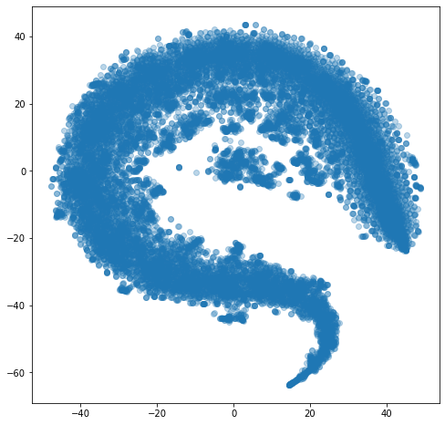
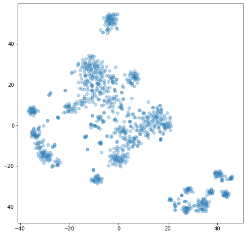
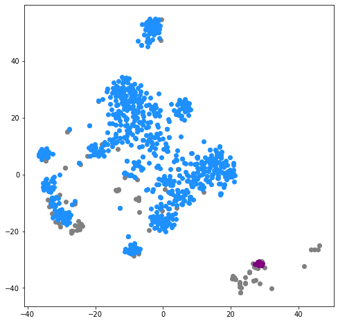
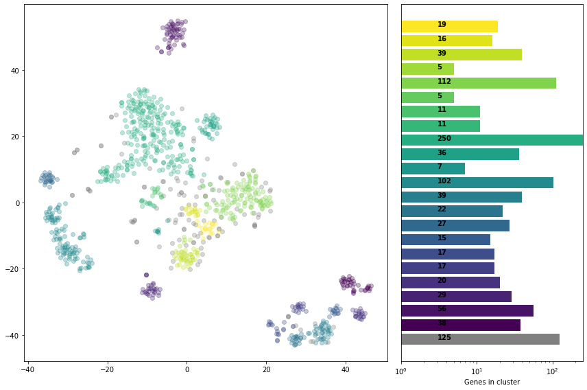
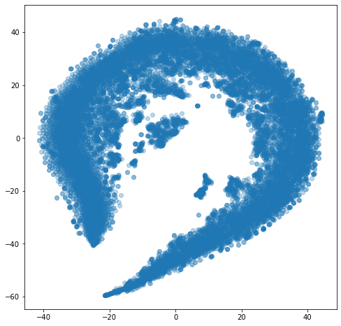

import pandas as pd
import numpy as np
import hdbscan
import matplotlib.pyplot as plt
from matplotlib import cm
from sklearn.manifold import TSNE
from sklearn.cluster import DBSCAN
from sklearn.preprocessing import power_transformdef plot_clusters(labels, projection):
clust_label_df = pd.DataFrame({
'label': labels,
'x': projection[:,0],
'y':projection[:,1]
})
fig, axs = plt.subplots(figsize = (12,8), ncols = 2, gridspec_kw = {'width_ratios': (4,2)}, dpi = 600)
palette = ['grey', *cm.get_cmap('viridis', labels.max()+1).colors]
for i in range(-1, labels.max()+1):
label_frame = clust_label_df.loc[clust_label_df['label'] == i]
axs[0].scatter(label_frame.x, label_frame.y, color = palette[i+1], alpha = 0.3)
bar_y = np.arange(labels.max()+2)
cluster_sizes = [len([x for x in labels if x == i]) for i in range(-1, labels.max()+1)]
axs[1].set_xscale('log')
axs[1].set_xlim((1, max(cluster_sizes)))
axs[1].set_yticks([],[])
for i in bar_y:
axs[1].text(3, bar_y[i], cluster_sizes[i], weight = 'bold')
axs[1].barh(bar_y, cluster_sizes, color = palette)
axs[1].set_xlabel('Genes in cluster')
plt.tight_layout()
I can import the GDSC1 data directly from the data section of the website.
rma_expr = pd.read_csv("https://www.cancerrxgene.org/gdsc1000/GDSC1000_WebResources//Data/preprocessed/Cell_line_RMA_proc_basalExp.txt.zip", sep = "\t")
rma_expr = rma_expr.drop('GENE_title', axis = 1)
rma_expr= rma_expr.set_index('GENE_SYMBOLS')
rma_expr| DATA.906826 | DATA.687983 | DATA.910927 | DATA.1240138 | DATA.1240139 | DATA.906792 | DATA.910688 | DATA.1240135 | DATA.1290812 | DATA.907045 | ... | DATA.753584 | DATA.907044 | DATA.998184 | DATA.908145 | DATA.1659787 | DATA.1298157 | DATA.1480372 | DATA.1298533 | DATA.930299 | DATA.905954.1 | |
|---|---|---|---|---|---|---|---|---|---|---|---|---|---|---|---|---|---|---|---|---|---|
| GENE_SYMBOLS | |||||||||||||||||||||
| TSPAN6 | 7.632023 | 7.548671 | 8.712338 | 7.797142 | 7.729268 | 7.074533 | 3.285198 | 6.961606 | 5.943046 | 3.455951 | ... | 7.105637 | 3.236503 | 3.038892 | 8.373223 | 6.932178 | 8.441628 | 8.422922 | 8.089255 | 3.112333 | 7.153127 |
| TNMD | 2.964585 | 2.777716 | 2.643508 | 2.817923 | 2.957739 | 2.889677 | 2.828203 | 2.874751 | 2.686874 | 3.290184 | ... | 2.798847 | 2.745137 | 2.976406 | 2.852552 | 2.622630 | 2.639276 | 2.879890 | 2.521169 | 2.870468 | 2.834285 |
| DPM1 | 10.379553 | 11.807341 | 9.880733 | 9.883471 | 10.418840 | 9.773987 | 10.264385 | 10.205931 | 10.299757 | 11.570155 | ... | 10.486486 | 10.442951 | 10.311962 | 10.454830 | 10.418475 | 11.463742 | 10.557777 | 10.792750 | 9.873902 | 10.788218 |
| SCYL3 | 3.614794 | 4.066887 | 3.956230 | 4.063701 | 4.341500 | 4.270903 | 5.968168 | 3.715033 | 3.848112 | 5.560883 | ... | 3.696835 | 4.624013 | 4.348524 | 3.858121 | 3.947561 | 4.425849 | 3.550390 | 4.443337 | 4.266828 | 4.100493 |
| C1orf112 | 3.380681 | 3.732485 | 3.236620 | 3.558414 | 3.840373 | 3.815055 | 3.011867 | 3.268449 | 3.352835 | 3.571228 | ... | 3.726833 | 3.947744 | 3.806584 | 3.196988 | 3.814831 | 4.384732 | 4.247189 | 3.071359 | 3.230197 | 3.435795 |
| ... | ... | ... | ... | ... | ... | ... | ... | ... | ... | ... | ... | ... | ... | ... | ... | ... | ... | ... | ... | ... | ... |
| NaN | 2.852537 | 2.776771 | 2.685307 | 3.436412 | 2.951270 | 3.233383 | 3.810246 | 2.792116 | 2.641117 | 3.124607 | ... | 2.699663 | 5.190438 | 3.253381 | 3.000088 | 2.846830 | 2.959009 | 2.974475 | 2.903894 | 2.857956 | 3.033662 |
| POLRMTP1 | 3.130696 | 3.260982 | 3.176239 | 3.074432 | 3.213545 | 3.382112 | 3.200106 | 2.829053 | 3.158745 | 3.173933 | ... | 2.773728 | 2.988250 | 3.514337 | 3.254306 | 3.139208 | 3.007502 | 3.088841 | 2.847505 | 2.832840 | 2.817057 |
| UBL5P2 | 9.986616 | 9.002814 | 9.113243 | 9.958284 | 9.938978 | 8.714820 | 9.396484 | 9.779745 | 9.477582 | 9.518999 | ... | 9.593772 | 9.506062 | 9.945730 | 9.890244 | 10.018968 | 9.332193 | 10.742651 | 8.544696 | 9.900550 | 9.071943 |
| TBC1D3P5 | 3.073724 | 3.000182 | 2.916274 | 3.256500 | 3.396126 | 3.497439 | 3.193505 | 3.254539 | 3.143067 | 3.240584 | ... | 3.407260 | 3.256900 | 3.189972 | 3.155584 | 3.357660 | 3.435411 | 3.317945 | 3.174515 | 3.243563 | 3.324517 |
| NaN | 7.284733 | 8.504804 | 7.059092 | 7.318125 | 7.726867 | 7.085595 | 7.355886 | 7.253298 | 8.311210 | 6.124752 | ... | 7.553804 | 6.609763 | 7.292760 | 7.923263 | 7.135000 | 10.392042 | 6.203929 | 7.119213 | 7.622261 | 7.290293 |
17737 rows × 1018 columns
So each column of this dataset is the expression data for a cell line, and each row is a gene. I’ve confirmed that each number (e.g. 906826 for DATA.906826) is a line (e.g. CAL-120). I will eventually need to find a way to map these, but it’s not necessary yet.
There are 17737 genes! Yikes.
I’ll want to cluster genes by their cell-lines. A good candidate for this might be HDBScan, which works nicely on high dimensional data (this is 1020-dimensional) and odd-shaped clusters.
Before performing the clustering, it’s probably a good idea to visualise the genes’ distribution. I’ll use a t-SNE to reduce the dimensions.
tsne = TSNE(n_components = 2)gene_embed = tsne.fit_transform(rma_expr)C:\Users\mbzjim\Anaconda3\envs\bioinf-expression\lib\site-packages\sklearn\manifold\_t_sne.py:795: FutureWarning: The default initialization in TSNE will change from 'random' to 'pca' in 1.2.
warnings.warn(
C:\Users\mbzjim\Anaconda3\envs\bioinf-expression\lib\site-packages\sklearn\manifold\_t_sne.py:805: FutureWarning: The default learning rate in TSNE will change from 200.0 to 'auto' in 1.2.
warnings.warn(fig, ax = plt.subplots(figsize = (8,8))
ax.scatter(gene_embed[:,0], gene_embed[:,1], alpha = 0.3)
Well that’s quite pretty! Possibly not too promising for getting something useful for clustering, but very, very pretty. Let’s have a go at clustering.
clusterer = hdbscan.HDBSCAN(metric = 'manhattan')
clusterer.fit(rma_expr)HDBSCAN(metric='manhattan')In a Jupyter environment, please rerun this cell to show the HTML representation or trust the notebook.
On GitHub, the HTML representation is unable to render, please try loading this page with nbviewer.org.
HDBSCAN(metric='manhattan')
clusterer.labels_.max()7clust_label_df = pd.DataFrame({
'label': clusterer.labels_,
'x': gene_embed[:,0],
'y':gene_embed[:,1]
})plot_clusters(clusterer.labels_, gene_embed)
plt.savefig('20220614 clusters no norm.png')
for i in range(-1,8):
print(len([x for x in clusterer.labels_ if x == i]))9985
14
17
9
11
40
38
8
7615pd.DataFrame({
'Gene': rma_expr.index,
'Cluster': clusterer.labels_
}).to_csv('2022')| Gene | Cluster | |
|---|---|---|
| 0 | TSPAN6 | -1 |
| 1 | TNMD | 7 |
| 2 | DPM1 | -1 |
| 3 | SCYL3 | -1 |
| 4 | C1orf112 | 7 |
| ... | ... | ... |
| 17732 | NaN | -1 |
| 17733 | POLRMTP1 | 7 |
| 17734 | UBL5P2 | -1 |
| 17735 | TBC1D3P5 | 7 |
| 17736 | NaN | -1 |
17737 rows × 2 columns
rma_expr.iloc[np.where(np.array(clusterer.labels_) == 0)]| DATA.906826 | DATA.687983 | DATA.910927 | DATA.1240138 | DATA.1240139 | DATA.906792 | DATA.910688 | DATA.1240135 | DATA.1290812 | DATA.907045 | ... | DATA.753584 | DATA.907044 | DATA.998184 | DATA.908145 | DATA.1659787 | DATA.1298157 | DATA.1480372 | DATA.1298533 | DATA.930299 | DATA.905954.1 | |
|---|---|---|---|---|---|---|---|---|---|---|---|---|---|---|---|---|---|---|---|---|---|
| GENE_SYMBOLS | |||||||||||||||||||||
| ZNF207 | 9.149245 | 9.598530 | 9.529239 | 9.569737 | 9.039720 | 9.338259 | 9.390774 | 9.387216 | 9.241169 | 8.984273 | ... | 9.364188 | 9.924896 | 9.791887 | 9.336494 | 9.229675 | 9.099492 | 8.953671 | 9.162659 | 9.027736 | 8.781803 |
| RPL18 | 9.259280 | 8.905354 | 8.892454 | 8.702678 | 9.048737 | 8.865378 | 9.202292 | 8.913216 | 9.214355 | 8.783834 | ... | 8.852625 | 9.297845 | 9.065611 | 8.777511 | 9.152780 | 8.864735 | 8.688588 | 9.173508 | 8.803642 | 9.010596 |
| DAZAP1 | 8.907077 | 8.543832 | 8.704225 | 8.875372 | 8.753537 | 8.417100 | 8.736287 | 8.668262 | 8.532211 | 8.802285 | ... | 8.966488 | 9.404492 | 9.009522 | 8.289871 | 9.147478 | 9.071671 | 8.902358 | 8.950401 | 8.366367 | 8.192479 |
| NDUFA8 | 9.451878 | 9.223173 | 9.040262 | 9.331584 | 9.816536 | 9.362101 | 8.926020 | 8.409499 | 8.961600 | 9.925954 | ... | 9.361001 | 9.130707 | 9.379157 | 9.164346 | 9.872406 | 9.344870 | 9.409293 | 8.553329 | 9.134611 | 8.970756 |
| KHDRBS1 | 9.333762 | 9.796719 | 9.488775 | 9.137610 | 9.604341 | 8.885684 | 9.461784 | 9.177097 | 9.245956 | 9.274706 | ... | 9.382517 | 10.093995 | 9.990083 | 9.042866 | 9.586505 | 9.264751 | 9.206946 | 8.755240 | 8.677579 | 8.842731 |
| HNRNPR | 9.249516 | 10.099268 | 9.528582 | 8.701567 | 8.820962 | 9.160233 | 8.585390 | 9.152517 | 8.889113 | 8.665435 | ... | 9.595550 | 9.614478 | 9.914962 | 9.129271 | 9.426897 | 9.254860 | 9.076327 | 8.683015 | 8.591677 | 9.179880 |
| COX4I1 | 9.241445 | 9.237713 | 8.974834 | 9.033586 | 9.335509 | 9.666359 | 9.691215 | 9.557738 | 8.582465 | 8.576538 | ... | 8.526318 | 9.116937 | 9.292374 | 9.064512 | 9.278732 | 9.772807 | 8.842603 | 9.032717 | 10.058278 | 8.645415 |
| IMMT | 9.353579 | 9.694776 | 9.492804 | 9.211984 | 9.706641 | 9.819640 | 8.577380 | 9.142301 | 9.207106 | 8.902503 | ... | 8.377450 | 9.573851 | 8.989231 | 9.126977 | 9.712430 | 9.588423 | 9.244603 | 8.884331 | 9.219726 | 9.389195 |
| RAN | 9.006791 | 9.093112 | 9.140899 | 8.989725 | 8.735195 | 8.950046 | 9.162814 | 9.533229 | 9.217307 | 8.896219 | ... | 9.121244 | 9.418952 | 9.358365 | 8.569514 | 9.099175 | 9.120019 | 9.120249 | 8.879961 | 9.134506 | 9.051287 |
| TRA2B | 9.058732 | 9.309230 | 9.366584 | 8.287180 | 9.080474 | 9.457913 | 9.476382 | 9.120023 | 8.564129 | 9.009244 | ... | 9.489144 | 10.336131 | 10.058332 | 8.639155 | 9.445195 | 8.748520 | 9.806317 | 9.132215 | 9.393969 | 10.185067 |
| GTF2A2 | 8.953807 | 9.861198 | 9.254364 | 9.156314 | 10.173398 | 9.349299 | 9.771041 | 9.228213 | 9.109823 | 9.054070 | ... | 9.158146 | 9.444498 | 9.691315 | 9.531394 | 9.605255 | 9.321469 | 10.442404 | 9.081418 | 9.910846 | 9.185616 |
| ACP1 | 9.160958 | 9.591635 | 9.567486 | 9.465266 | 9.341118 | 9.134301 | 9.278034 | 9.302991 | 9.570052 | 7.872619 | ... | 8.897230 | 9.631110 | 9.948404 | 9.187814 | 9.723483 | 9.938727 | 9.663881 | 9.012706 | 9.563143 | 9.719890 |
| COX6C | 9.688441 | 9.922729 | 9.607208 | 9.792015 | 9.734440 | 10.193915 | 10.023306 | 9.063166 | 9.412343 | 11.461331 | ... | 9.352066 | 9.923032 | 10.061512 | 9.613430 | 9.403856 | 10.097046 | 10.100884 | 9.489675 | 10.508655 | 9.320214 |
| USMG5 | 9.781747 | 10.732278 | 9.604569 | 10.163163 | 10.183137 | 10.298868 | 10.098413 | 9.927374 | 9.077700 | 9.595563 | ... | 9.480882 | 9.749590 | 9.982558 | 9.986902 | 9.636299 | 9.548946 | 10.039625 | 9.031346 | 10.268828 | 9.399783 |
14 rows × 1018 columns
rma_expr_normalised.apply(lambda x: )tsne2 = TSNE(n_components = 2)
cell_embed = tsne.fit_transform(rma_expr.T)
fig, ax = plt.subplots(figsize = (8,8))
ax.scatter(cell_embed[:,0], cell_embed[:,1], alpha = 0.3)C:\Users\mbzjim\Anaconda3\envs\bioinf-expression\lib\site-packages\sklearn\manifold\_t_sne.py:795: FutureWarning: The default initialization in TSNE will change from 'random' to 'pca' in 1.2.
warnings.warn(
C:\Users\mbzjim\Anaconda3\envs\bioinf-expression\lib\site-packages\sklearn\manifold\_t_sne.py:805: FutureWarning: The default learning rate in TSNE will change from 200.0 to 'auto' in 1.2.
warnings.warn(
C:\Users\mbzjim\Anaconda3\envs\bioinf-expression\lib\site-packages\sklearn\utils\validation.py:1858: FutureWarning: Feature names only support names that are all strings. Got feature names with dtypes: ['float', 'str']. An error will be raised in 1.2.
warnings.warn(
cell_clusterer = hdbscan.HDBSCAN(metric = 'manhattan')
cell_clusterer.fit(rma_expr.T)HDBSCAN(metric='manhattan')In a Jupyter environment, please rerun this cell to show the HTML representation or trust the notebook.
On GitHub, the HTML representation is unable to render, please try loading this page with nbviewer.org.
HDBSCAN(metric='manhattan')
cell_clust_label_df = pd.DataFrame({
'label': cell_clusterer.labels_,
'x': cell_embed[:,0],
'y': cell_embed[:,1]
})cell_clusterer.labels_.max()2fig, ax = plt.subplots(figsize = (8,8))
palette = ['grey', 'dodgerblue', 'purple', 'firebrick', 'darkorange', 'gold', 'olivedrab', 'forestgreen', 'c']
for i in range(-1,2):
label_frame = cell_clust_label_df.loc[cell_clust_label_df['label'] == i]
ax.scatter(label_frame.x, label_frame.y, color = palette[i+1])
tsne_cell_clusterer = hdbscan.HDBSCAN(metric = 'manhattan')
tsne_cell_clusterer.fit(cell_embed)
tsne_cell_clust_label_df = pd.DataFrame({
'label': tsne_cell_clusterer.labels_,
'x': cell_embed[:,0],
'y': cell_embed[:,1]
})plot_clusters(tsne_cell_clusterer.labels_, cell_embed)
rma_expr_normalised = rma_expr.copy()power_transform(np.array(rma_expr_normalised['DATA.906826']).reshape(-1,1), method = 'box-cox')array([[ 1.30267616],
[-1.04393387],
[ 1.6845223 ],
...,
[ 1.64306748],
[-0.90522956],
[ 1.23335471]])arr_rma_expr_norm = power_transform(rma_expr_normalised)arr_rma_expr_norm.shape(17737, 1018)gene_embed_norm = tsne.fit_transform(arr_rma_expr_norm)C:\Users\mbzjim\Anaconda3\envs\bioinf-expression\lib\site-packages\sklearn\manifold\_t_sne.py:795: FutureWarning: The default initialization in TSNE will change from 'random' to 'pca' in 1.2.
warnings.warn(
C:\Users\mbzjim\Anaconda3\envs\bioinf-expression\lib\site-packages\sklearn\manifold\_t_sne.py:805: FutureWarning: The default learning rate in TSNE will change from 200.0 to 'auto' in 1.2.
warnings.warn(fig, ax = plt.subplots(figsize = (8,8))
ax.scatter(gene_embed_norm[:,0], gene_embed_norm[:,1], alpha = 0.3)
clusterer_norm = hdbscan.HDBSCAN(metric = 'manhattan')
clusterer_norm.fit(arr_rma_expr_norm)HDBSCAN(metric='manhattan')In a Jupyter environment, please rerun this cell to show the HTML representation or trust the notebook.
On GitHub, the HTML representation is unable to render, please try loading this page with nbviewer.org.
HDBSCAN(metric='manhattan')
plot_clusters(clusterer_norm.labels_, gene_embed_norm)
plt.savefig('20220614 clusters power norm.png')
@article{mcinnes2017hdbscan, title={hdbscan: Hierarchical density based clustering}, author={McInnes, Leland and Healy, John and Astels, Steve}, journal={The Journal of Open Source Software}, volume={2}, number={11}, pages={205}, year={2017} }